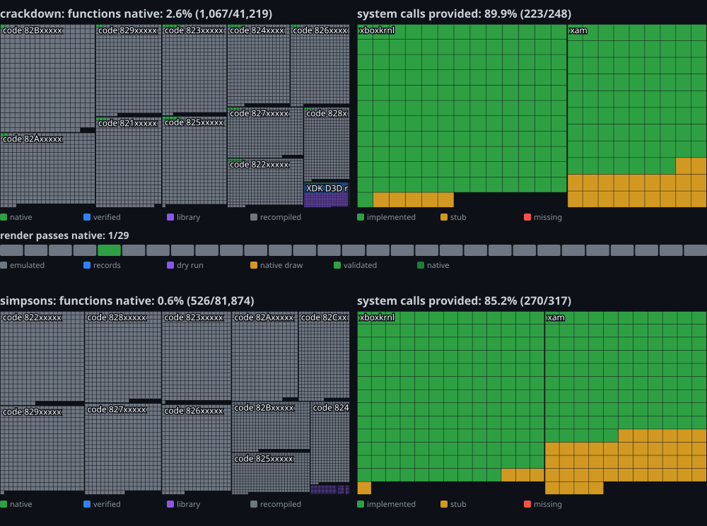

Any360 progress
What the ReXGlue runtime and recompiler provide of what each Xbox 360
title needs, and how much of the native-port layer exists. Generated by tools/progress_page.py on
2026-10-30 from docs/coverage/; raw numbers in progress.json.
Counts and public API names only: no game code or data.

System calls
Kernel and XAM functions each title's XEX imports, as the SDK runtime provides them (implemented or mapped variable, against the total imported). Stubs return without doing the work; the per-title reports list them.
| Library | crackdown: provided / imported | % | simpsons: provided / imported | % |
|---|---|---|---|---|
| xam | 79 / 99 | 79.8% | 104 / 147 | 70.7% |
| xboxkrnl | 144 / 149 | 96.6% | 166 / 170 | 97.6% |
| Total | 223 / 248 | 89.9% | 270 / 317 | 85.2% |
PowerPC instructions
Static instruction count of each title's recompiled code by family, and the share the SDK recompiler translates
(a mnemonic without a builder becomes a REX_UNIMPLEMENTED trap).
| Family | crackdown: handled / used | % | simpsons: handled / used | % |
|---|---|---|---|---|
| load / store / cache | 901,869 / 901,869 | 100.0% | 990,621 / 990,621 | 100.0% |
| integer | 763,965 / 763,965 | 100.0% | 805,211 / 805,212 | 100.0% |
| branch / trap | 463,891 / 463,891 | 100.0% | 574,622 / 574,622 | 100.0% |
| floating point | 217,093 / 217,093 | 100.0% | 192,811 / 192,811 | 100.0% |
| compare / CR | 163,119 / 163,119 | 100.0% | 197,445 / 197,445 | 100.0% |
| VMX / VMX128 | 92,139 / 92,139 | 100.0% | 94,971 / 94,971 | 100.0% |
| system | 65,768 / 65,768 | 100.0% | 82,548 / 82,548 | 100.0% |
| Total | 2,667,844 / 2,667,844 | 100.0% | 2,938,229 / 2,938,230 | 100.0% |
Game code replaced natively
Recompiled functions of each title, and those its port replaces with a PC implementation (hooks). A native port grows this number; everything else runs as recompiled guest code.
| Title | recompiled functions | replaced natively | % |
|---|---|---|---|
| crackdown | 41,219 | 103 | 0.2% |
| simpsons | 81,874 | 27 | 0.0% |
The SDK itself
Independent of any title: the kernel exports the runtime implements of those its export tables know, and the opcodes the recompiler has a builder for of those its disassembler decodes (the rest are POWER, 64-bit server or privileged forms no title uses).
| SDK | kernel exports implemented / known | % | opcodes with a builder / known | % |
|---|---|---|---|---|
| ReXGlue 0.10.0 (crackdown) | 493 / 2914 | 16.9% | 497 / 1842 | 27.0% |
| ReXGlue 0.8.0 (simpsons) | 489 / 2914 | 16.8% | 497 / 1842 | 27.0% |
The layer
Components of the Xbox 360 native-port layer, where each comes from and its state (2 of 24 done).
The list is kept by hand in layer/status.json; the design is in docs/DESIGN.md.
| Area | Component | State | Comes from | Note |
|---|---|---|---|---|
| SDK | Pinned ReXGlue baseline (v0.10.0) and patch application rules | planned | crackdown: patches/rexglue-sdk/baseline.env, tools/build-patched-rexruntime.* | move the scripts, keep the hashes; the game repository keeps only its game manifest |
| SDK | Kernel / XAM fixes (0001, 0003, 0008, 0059-0061, 0065, 0066, 0070, 0086, 0087) | planned | crackdown: patches/rexglue-sdk | generic as they are; 0060 and 0087 fix real bugs any title may hit |
| SDK | Codegen patches: vpkd3d128 in place, bit-exact vrsqrtefp, single-rounding FMA (0005, 0052, 0095) | planned | crackdown: patches/rexglue-sdk | the helpers are emitted into the generated <game>_pch.h, so they need no SDK header change |
| SDK | Audio: XMA context fixes and callback pacing (0004, 0007, 0050, 0051, 0096) | planned | crackdown: patches/rexglue-sdk | the Simpsons title drives the XMA contexts through the kernel API directly: these matter there first |
| SDK | Threading, clock and wait patches (0015-0021, 0026-0028, 0033, 0068, 0069) | planned | crackdown: patches/rexglue-sdk | generic; the Linux-only ones are the Steam Deck's |
| SDK | GPU shared-layer performance patches (0024, 0025, 0030-0034, 0041-0049, 0078-0080, 0097-0100, 0106-0113) | planned | crackdown: patches/rexglue-sdk | command processor, caches, cached indirect buffers, draw identity memo, frame stats and draw trace |
| SDK | Vulkan backend patches (0011, 0013, 0014, 0038-0040, 0043, 0046, 0049, 0053, 0058, 0114-0128) | planned | crackdown: patches/rexglue-sdk | the Windows Vulkan build (0114), dynamic uniform buffers (0122: +20-25% FPS), timers by section, occlusion queries in render passes |
| SDK | D3D12 backend patches (0006, 0010, 0035-0037, 0042, 0045, 0048, 0057, 0081-0083, 0088, 0090, 0099, 0101-0103) | planned | crackdown: patches/rexglue-sdk | kept for Windows users of the emulation path; not on the native renderer's path (Vulkan only) |
| SDK | Input: keyboard and mouse through XInputGetKeystroke and mouse look (0054, 0055, 0094) | planned | crackdown: patches/rexglue-sdk | generic with the per-title keybinds kept in the game |
| renderer | HLE frame ABI: rex_gpu_hle_submit_frame(const HleFrameAbi*), version 4 | planned | crackdown: src/hle_frame_abi.h + patch 0129 (rex/graphics/hle_frame.h) | the contract between a title's records and the plugin; both copies checked equal by a test |
| renderer | Draw record model: RecordKind, DrawRecord, shared immutable state blocks | planned | crackdown: src/hle_records.h | source-agnostic: filled by D3D hooks (Crackdown) or by a PM4 decode in the plugin (Simpsons plan) |
| renderer | PM4 decoder: Xenos type-0/type-3 packets to state writes, draws, shader loads, bin predication, indirect buffers | planned | crackdown: src/pm4_decode.h (+ tests/pm4_decode_tests.cpp) | header-only, no game knowledge; the opcode allow-list is the XDK D3D runtime's |
| renderer | Render pass markers in the command stream ('HLEM' NOP) and per-pass accounting | planned | crackdown: patch 0129 (CommandProcessor::OnHleMarker) | pass ids and names come from the title |
| renderer | Native pass pipeline in the Vulkan plugin: dry run to pipelines, native depth pass, depth comparison with the emulated target | planned | crackdown: patch 0129 | validated exact for static geometry on the shadow atlas (2026-10-29) |
| renderer | XDK D3D runtime binding: entry points (draw, clear, resolve, RunCommandBuffer, GPR flush) found by signature instead of by address | planned | crackdown: docs/progress/d3d_entry_points.txt (209 addresses); simpsons: re/d3d_method_table.md (174 signature matches) | the step that makes the renderer hooks portable between titles built with the same XDK |
| renderer | GPU feature census from a running title (PM4 opcodes, shader instruction families, formats, MSAA, memexport, queries) | planned | crackdown: patches 0107 (gpu_frame_stats), 0108/0113 (draw trace) | what the coverage tool cannot see statically |
| tests | Guest sandbox: run recompiled leaf functions outside the game in a lazily committed 4 GB guest space | planned | crackdown: tests/guest_sandbox.h, tests/cmake/guest_sandbox.cmake, tests/golden | the golden files hold addresses, inputs and outputs only |
| tests | SDK patch guards: tests that fail when a patched behaviour is lost at a rebase | planned | crackdown: tests/sdk_patch_guards_tests.cpp | |
| tools | Coverage: imports and instructions a title needs vs what the SDK provides | done | any360: tools/coverage.py (from crackdown tools/progress_map.py) | run on Crackdown and The Simpsons Game |
| tools | Patch inventory and progress page | done | any360: tools/patch_inventory.py, tools/progress_page.py | |
| tools | Crash mapping: host crash address to guest function and instruction | planned | crackdown: tools (verify-address-map.py, crash_report) | |
| tools | Missing-function finder: code reached only through pointers the analyzer missed | planned | crackdown: tools/find-missing-functions.py; simpsons: functions_patch.toml (found with an LD_PRELOAD trap) | both titles needed it; one tool |
| game | Render pass hooks and names (29 passes), D3D entry point addresses, shader object offsets, device shadow layout | game-specific | crackdown: src/hle_capture.cpp, src/hle_records.cpp | becomes an XDK-version table once the binding above exists |
| game | Settings, launcher, achievements, cheats, save compatibility, title updates | game-specific | crackdown: src/ | stays in each title's repository |
SDK patch sets the layer is built from, by the SDK area they change (tools/patch_inventory.py).
| Patch set | SDK area | Patches |
|---|---|---|
| crackdown | GPU: shared (command processor, caches) | 31 |
| crackdown | GPU: Vulkan backend | 26 |
| crackdown | GPU: D3D12 backend | 24 |
| crackdown | kernel: xboxkrnl | 10 |
| crackdown | core / platform (threads, clock, logging) | 8 |
| crackdown | audio (XMA, mixer) | 5 |
| crackdown | UI / presenter | 4 |
| crackdown | kernel: XAM | 3 |
| crackdown | codegen (recompiler) | 3 |
| crackdown | input | 3 |
| crackdown | other | 1 |
| crackdown | build | 1 |
| crackdown | HLE renderer channel | 1 |